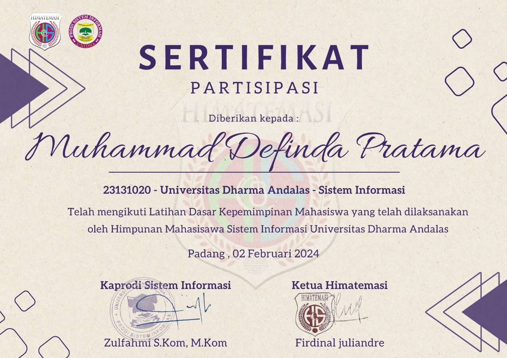

Pendidikan & Sertifikat
📠Universitas Dharma Andalas
S1 Sistem Informasi (2023–2025)
📄 Web Development — Dicoding Academy (2023–2024)
📄 Database Design — Oracle Academy (2024)
📄 Database Programming With SQL — Oracle Academy (2024)
📄 LDKM — (2024)


